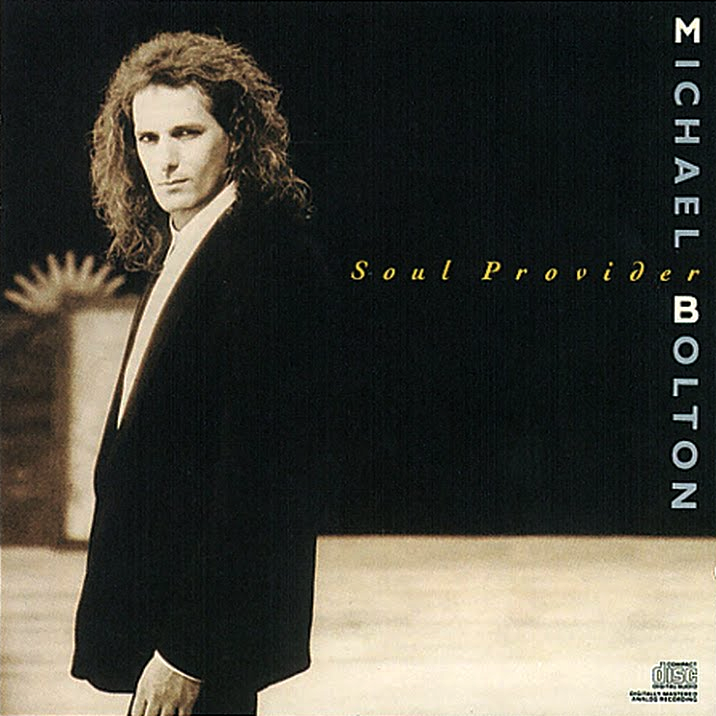

안녕하세요 라보엠입니다.
오늘 소개해드릴 노래는 마이클 볼튼(Michael Bolton) 명곡 How Am I Supposed To Live Without You 입니다.
마이클 볼튼(Michael Bolton) - How Am I Supposed To Live Without You
How Am I Supposed To Live Without You - Lyrics 가사
1.
I could hardly believe it, when I heard the news today
I had to come and get it straight from you
They said you were leavin', someone's swept your heart away
From the look upon your face I see it's true
오늘 그 소식을 들었을 때 믿을 수가 없었어요.
그 소식을 당신에게서 직접 듣고 싶었어요.
누군가 당신의 마음을 휩쓸었다며, 당신의 마음이 떠났다고 했어요.
당신 표정을 보니 사실인 것 같아요.
So tell me all about it, tell me 'bout the plans you're makin'
Oh, then tell me one thing more before I go
그러니까 다 말해봐요, 무슨 계획을 세우고 있는지 말이에요
아, 그럼 가기 전에 하나만 더 말해줘요.
(chor.)
Tell me how am I supposed to live without you
Now that I've been lovin' you so long
How am I supposed to live without you
And how am I supposed to carry on
When all that I've been livin' for is gone
말해 주세요 당신 없이 내가 어떻게 살 수 있을지 말이에요
지금까지 당신을 그렇게 오래 사랑했는데
당신 없이 내가 어떻게 살겠어요
내가 어떻게 살아가야 할까요
내가 살아왔던 모든 것이 사라졌는데
2.
I'm too proud for cryin', didn't come here to break down
It's just a dream of mine is coming to an end
And how can I blame you when I built my world around
The hope that one day we'd be so much more than friends
울기엔 너무 자랑스러워 울려고 온 게 아냐
내 꿈이 끝나는 것뿐에요.
그리고 내가 내 세상을 만들었을 때 어떻게 당신을 탓할 수 있겠어요?
언젠가는 우리가 친구 그 이상이 될 거라는 희망을 담은 그 세상을
I don't wanna know the price I'm gonna pay for dreaming, oh
Even now it's more than I can take
꿈을 꾸는 대가를 치르고 싶지 않아요
지금도 내가 감당하기 힘든걸요
(chor.)
Tell me how am I supposed to live without you
Now that I've been lovin' you so long
How am I supposed to live without you
And how am I supposed to carry on
When all that I've been livin' for is gone
말해 주세요 당신 없이 내가 어떻게 살 수 있을지 말이에요
지금까지 당신을 그렇게 오래 사랑했는데
당신 없이 내가 어떻게 살겠어요
내가 어떻게 살아가야 할까요
내가 살아왔던 모든 것이 사라졌는데
(br.)
No, I don't wanna know the price I'm gonna pay for dreaming
Oh, now that your dream has come true
아니, 꿈을 꾸는 대가는 알고 싶지 않아요.
오, 이제 당신의 꿈은 이루어졌어요.
(chor.)
Tell me how am I supposed to live without you
Now that I've been lovin' you so long
How am I supposed to live without you
And how am I supposed to carry on
When all that I've been livin' for is gone
말해 주세요 당신 없이 내가 어떻게 살 수 있을지 말이에요
지금까지 당신을 그렇게 오래 사랑했는데
당신 없이 내가 어떻게 살겠어요
내가 어떻게 살아가야 할까요
내가 살아왔던 모든 것이 사라졌는데
How Am I Supposed To Live Without You - 간략 감상 후기
너무 슬플 노래네요. 내 전부였던 연인이 다른 사람에게 갔다는 사실을 알고 너무 세상이 무너지는 노래입니다. 마이클 볼튼의 애절한 목소리가 찰떡같이 너무 잘 어울리는 노래입니다. 13년전 유튜브에 올라오고 무려 2.1억회를 들은 것을 보니 정말 많은 사람들의 심금을 울렸습니다. 그래도 괜찮습니다. 500일의 썸머처럼 여름이 가면 가을이 오니까요. 분명 좋은 사람 다시 만났을거라 믿습니다 .
